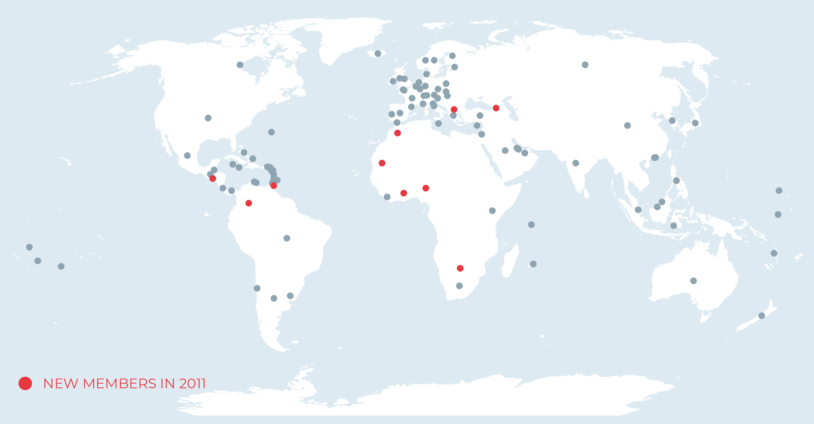
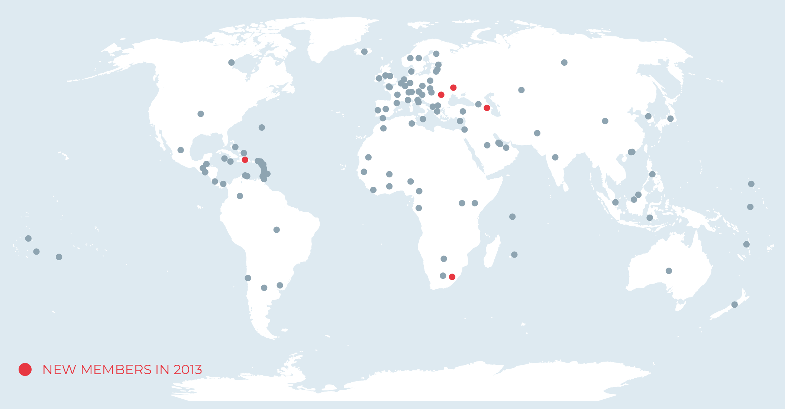
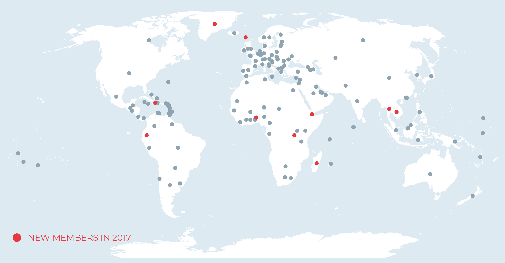
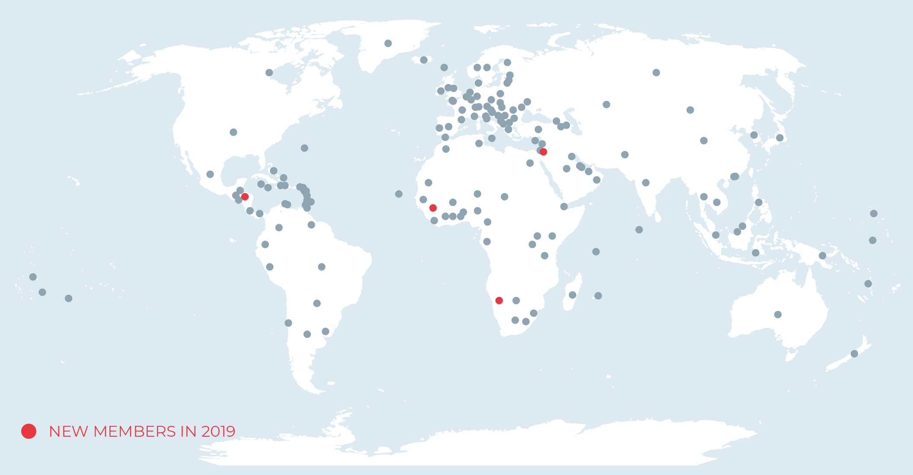

- September 2007
- February 2008
- June 2008
- September 2009
- April 2009
- September 2009
- September 2010
- June 2011
- October 2011
- May 2012
- June 2012
- October 2012
- September 2013
- November 2013
- February 2014
- October 2014
- November 2014
- November 2015
- April 2016
- September 2016
- November 2016
- July 2017
- September 2017
- November 2017
- July 2018
- September 2018
- October 2018
- November 2018
- December 2018
- March 2019
- June 2019
- October 2019
- November 2019
-
September 2007
88 members
-
February 2008
NewsLiechtenstein Leaks
-
June 2008
NewsUSB Scandal
-
September 2008
NewsGlobal Financial Crisis
-
April 2009
G20 Leaders - London, United KingdomThe era of banking secrecy is over at the G20 meeting
-
September 2009
Global Forum Plenary - Mexico City, MexicoThe Global Forum is restructured to include all jurisdictions committed to implement EOIR and agrees to carry out peer reviews to monitor progress.
89 members -
September 2010
G20 Leaders - Pittsburgh, United States“We welcome the expansion of the Global Forum on Transparency and Exchange of Information, including the participation of developing countries, and welcome the agreement to deliver an effective program of peer reviews.”
Global Forum Plenary - SingaporeThe Global Forum agrees to develop a technical assistance programme.
94 members
-
June 2011
Global Forum Plenary - BermudaThe Global Forum agrees to establish a platform for Competent Authorities to exchange best practices and enhance their relationships.
-
October 2011
Global Forum Plenary - Paris, FranceThe Global Forum agrees to extend its mandate until the end of 2015.
The Global Forum welcomes two pilot projects, funded by the UK Department for International Development (DFID), to assist Ghana and Kenya to build capacity and reinforce the legal infrastructure necessary for tax transparency and international co-operation.
Impact€14 billion additional revenue identified
Half a million individuals have voluntarily disclosed hidden assets
104 members  -
May 2012
Impact - Madrid, SpainFirst Competent Authorities meeting
-
June 2012
G20 Leaders - Los Cabos, MexicoWe welcome the OECD report on the practice of automatic information exchange, where we will continue to lead by example in implementing this practice.
-
October 2012
Global Forum Plenary - Cape Town, South AfricaThe Global Forum agrees to review the EOIR Terms of Reference in the light of the experience gained and the evolution of the exchange of information environment.
115 members -
September 2013
G20 Leaders - Saint Petersbourg, RussiaWe urge all jurisdictions to address the Global Forum recommendations in particular those 14 that have not yet moved to Phase 2. We invite the Global Forum to draw on the work of the FATF with respect to beneficial ownership. We also ask the Global Forum to establish a mechanism to monitor and review the implementation of the new global standard on automatic exchange of information
-
November 2013
Global Forum Plenary - Jakarta, IndonediaFirst 50 EOIR ratings adopted
The Global Forum agreed that, in order to ensure a continuous monitoring of implementation of EOI on request, after completion of the current round of reviews, a further round of reviews should be conducted starting in 2016.
The Global Forum agreed that, in order to ensure a continuous monitoring of implementation of EOI on request, after completion of the current round of reviews, a further round of reviews should be conducted starting in 2016.
120 members  -
February 2014
G20 Finance Ministers - Sydney, AustraliaG20 Finance Ministers endorse the Standard for Automatic Exchange of Financial Account Information in Tax Matters developed by the OECD (the AEOI Standard).
-
October 2014
Global Forum Plenary - Berlin, GermanyEndorse AEOI standard. 89 members commit to start exchanging information under AEOI standard within 4 years
51 jurisdictions participate in the first ever signing ceremony for the CRS MCAA for exchanges under the AEOI Standard.
Launch of the Africa Initiative– a 3-year project to raise awareness and build the tools to foster effective exchange of information led by African members and the Chair of the Global Forum with the collaboration of the Global Forum, ATAF, CREDAF, the OECD and the World Bank Group and the support of UK and France.
123 members -
November 2014
G20 - Brisbane, AustraliaTo prevent cross-border tax evasion, we endorse the global Common Reporting Standard for the automatic exchange of tax information (AEOI) on a reciprocal basis. We will begin to exchange information automatically with each other and with other countries by 2017 or end-2018, subject to completing necessary legislative procedures. We welcome financial centres' commitments to do the same and call on all to join us.
Impact€48 billion additional revenue identified
-
November 2015
G20 Leaders - Antalya, TurkeyWe are progressing towards enhancing the transparency of our tax systems and we reaffirm our previous commitments to information exchange on-request as well as to automatic exchange of information by 2017 or end-2018. We invite other jurisdictions to join us. We support the efforts for strengthening developing economies' engagement in the international tax agenda.
Impact€37 billion additional revenue identified
129 members -
April 2016
News eventPanama Papers
-
September 2016
G20 Leaders - Hangzhou, ChinaWe also welcome the progress made on effective and widespread implementation of the internationally agreed standards on tax transparency and reiterate our call on all relevant countries including all financial centers and jurisdictions, which have not yet done so to commit without delay to implementing the standard of automatic exchange of information by 2018 at the latest and to sign and ratify the Multilateral Convention on Mutual Administrative Assistance in Tax Matters.
ImpactAlmost € 55 billion in additional revenues identified
-
November 2016
Global Forum Plenary - Tbilisi, GeorgiaGF members welcomed the finalisation of the first round of peer reviews on EOIR and agreed to take forward further work on beneficial ownership.
137 members -
July 2017
G20 Leaders - Hamburg, GermanyWe look forward to the first automatic exchange of financial account information under the Common Reporting Standard (CRS) in September 2017. We call on all relevant jurisdictions to begin exchanges by September 2018 at the latest.
Impact€85 billion additional revenue identified
-
September 2017
ImpactFirst exchanges by around 50 “early adopters” under the AEOI Standard, using the Common Transmission System (CTS), developed by the OECD’s Forum on Tax Administration and managed by the Global Forum.
-
November 2017
Global Forum Plenary - Yaoundé, CameroonThe Africa Initiative is renewed for a further 3 years with the support of additional donors (EU, Norway, Switzerland) and partners (WATAF, AU, AfDB)
The Yaoundé Declaration is signed by the Ministers of Finance of Cameroon, Liberia, Uganda and Benin, calling for action by the African Union to take forward discussions on tax cooperation and illicit financial flows and their link to domestic resource mobilisation. It is now supported by 25 African Ministers of Finance.
Publication of the 2017 AEOI Implementation report, setting out the implementation status of all committed jurisdictions, the first of its kind.
Adoption of the Global Forum’s Plan of Action for Developing Countries’ Participation in AEOI.
147members  News eventPanama Papers
-
July 2018
Impact€93 billion additional revenue identified
-
September 2018
ImpactExchanges under the AEOI Standard by almost 100 jurisdictions.
-
October 2018
NewsCumEx-Files.
-
November 2018
Global Forum Plenary - Punta del Este, UruguayThe Global Forum adopts the Terms of Reference for the AEOI Reviews, including in relation to its effectiveness in practice.
The GF adopts a framework for post-exchange assessments of confidentiality for AEOI.
Signing of the Punta del Este declaration on Strengthening Regional Efforts to Combat Tax Fraud and Corruption by Uruguay, Argentina, Panama and Paraguay (following the meeting, Ecuador, Colombia, Chile and Peru adhered to the Declaration). Paragraph 6 of the Declaration provides that signatory jurisdictions will further consider the possibility of wider use of the information exchanged for other law enforcement purposes.
Publication of the 2018 AEOI Implementation Report
154 members
-
December 2018
G20 Leaders - Buenos Aires, ArgentinaWe welcome the commencement of the automatic exchange of financial account information and acknowledge the strengthened criteria developed by the OECD to identify jurisdictions that have not satisfactorily implemented the tax transparency standards.
ImpactInformation on 47 million offshore accounts exchanged in 2018, with a total value of €4.9 trillion
-
March 2019
OutputRelease of the first Africa Initiative progress report “Tax Transparency in Africa
-
June 2019
G20 Leaders - Osaka, JapanWe welcome the recent achievements on tax transparency, including the progress on automatic exchange of information for tax purposes
Impact€95 billion additional revenue identified
Half a million individuals have voluntarily disclosed hidden assets
-
October 2019
158 members
-
November 2019
Global Forum Plenary - Paris, France10th Anniversary plenary of the Global Forum, Paris, France participated in by over 60 ministers and other VIPs.
Publication of the 2019 AEOI Implementation Report.
158 members  ImpactOver €100 billion additional revenue identified
One million individuals have voluntarily disclosed hidden assets
Around 8000 tax exchange agreements in place
More than 250 000 information requests on taxpayers